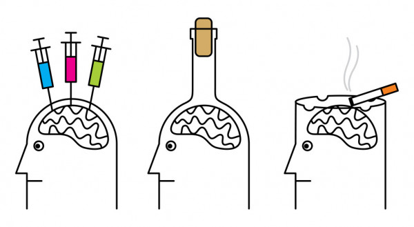

ALCOHOL
Las personas beben alcohol por muchas razones
diferentes. Muchas personas que se convierten en adictas al alcohol lo usan
como una forma de tratar la ansiedad y la depresión. Aunque puede ayudar a disminuir
sus problemas a corto plazo, el alcohol, por lo general, empeora la ansiedad y
la depresión. Lo hace al interactuar con sustancias
químicas llamadas neurotransmisores que están en el cerebro, que ayudan
naturalmente a combatir la depresión y la ansiedad. Se cree que los factores sociales, como la
capacidad económica y la disponibilidad del alcohol, la presión
de compañeros o colegas y la compra de rondas en grupos tienen un
papel importante en la causa de la dependencia del alcohol.
FACTORES DE RIESGO
- Factores genéticos: Es
ampliamente sabido y aceptado que el alcoholismo tiende ocurrir en las
familias. Debido a esta predisposición genética, las personas que
tienen parientes con problemas de abuso de sustancias corren un mayor
riesgo de tener un problema con el alcohol.
- Factores físicos: Además
de las influencias genéticas, las investigaciones han identificado
varios factores biológicos. Por ejemplo, las áreas del cerebro
responsables del control de los impulsos, la toma de decisiones y el
funcionamiento motriz se degradan cuando una persona consume alcohol.
Mientras más tiempo dure el abuso del alcohol, mayor es el daño a estas
áreas y al funcionamiento del cerebro.
- Factores ambientales: Muchos
profesionistas de salud mental consideran que el entorno de una persona
puede orillarla a abusar del alcohol. Si una persona tiene una
disposición genética al abuso del alcohol, es probable que ciertas
influencias ambientales o circunstanciales puedan llevar a dicha
persona a consumir alcohol de manera excesiva. La exposición al estrés
crónico, la violencia y el trauma son ejemplos de estas influencias.
